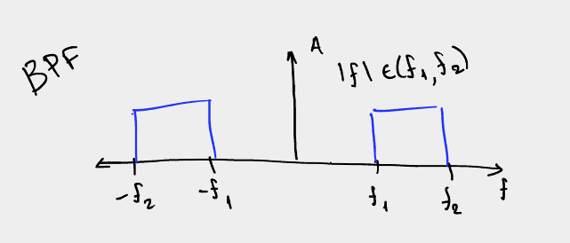
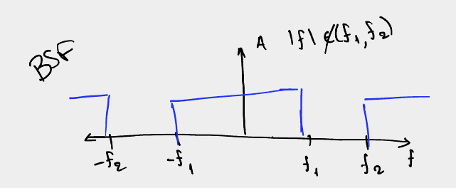

Διάλεξη 2: ΑΜ: Σημειώσεις επί των διαφανειών.
Table of Contents
Αναλογικά σήματα:
- Διαμόρφωση πλάτους:
- Αντικείμενο των διαλέξεων (2),3,4
- Διαμόρφωση γωνίας
- Μετά φαντάζομαι
Το γενικό concept για την μεταφορά σήματος στις αναλογικές επικοινωνίες:

Βασικές έννοιες.
Φίλτρα
LPF - Χαμηλοπερατό Φίλτρο
Ονομάζουμε το φίλτρο το οποίο επιτρέπει συχνότητες μόνο μικρότερες ορισμένης συχνότητας \(f_1\)
HPF - Υψηλοπερατό Φίλτρο
Ονομάζουμε το φίλτρο το οποίο επιτρέπει συχνότητες μόνο μεγαλύτερες ορισμένης
συχνότητας \(f_1\)

BPF - Band Pass Filter, Ζωνοπερατό Φίλτρο
Ονομάζουμε το φίλτρο το οποίο επιτρέπει συχνότητες μόνο εντός μιας ζώνης συχνοτήτων, δηλαδή συχνότητες οι οποίες βρίσκονται μεταξύ των ορισμένων \(f_1\) και \(f_2\) 
BSF - Band Stop Filter
Ονομάζουμε το φίλτρο το οποίο κόβει συχνότητες μόνο εντός μιας ζώνης συχνοτήτων, δηλαδή συχνότητες οι οποίες βρίσκονται μεταξύ των ορισμένων \(f_1\) και \(f_2\) 
Ζωνοπερατά σήματα
Δοθείσης συχνότητας \(f_c\) μπορούμε να αναλύσουμε ένα σήμα (εκείνης της συχνότητας) σε inphase και quadrature συνιστώσα:
\begin{equation} \label{eq:5} x(t) = x_i(t)\cos{2\pi f_c t} - x_q(t)\sin{2\pi f_c t} \end{equation}Παρατηρήσεις επι αυτού
- Inphase όταν είναι το ήδη γνωστό σήμα πολλαπλασιζόμενο από συνημίτονο στην κατάλληλη συχνότητα
- Κάθετο αντίστοιχα όταν έχει ημίτονο ( λογικό, διαφορά \(\frac{\pi}{2}\) )
- Τα δύο σήματα είναι μεταξύ τους ορθογώνια
Περιβάλλουσα
Με αυτόν τον τρόπο (ανάλυση σε συμφασική και κάθετη συνιστώσα) είναι εύκολος ο προσδιορισμός της περιβάλλουσας (δηλαδή της καμπύλης που πρακτικά περικλείει την γραφική παράσταση του αποστελλόμενου σήματος \(x(t)\)):
\begin{equation} \label{eq:7} V(t) = \sqrt{x_I^2(t) + x_Q^2(t)} \end{equation}Διαμόρφωση
Μετασχηματισμός του σήματος πληροφορίας ούτως ώστε να μπορεί να μεταδοθεί και να απομονωθεί με την χρήση ζωνοπερατού φίλτρου.
Μεταβάλλουμε κατάλληλα το σήμα πληροφοριών έτσι ώστε να μπορούμε να το μεταδώσουμε επι κοινόχρηστου μέσου:
Τι κερδίζεται με την διαμόρφωση:
- Πομποί και δέκτες χαμηλής πολυπλοκότητας
- Πολυπλεξία ( δυνατότητα πολλών εκπομπών, ταυτόχρονων, επί του ίδιου μέσου )
ΑΜ: Amplitude Modulation
Διαμόρφωση πλάτους στον χρόνο. Είδη διαμόρφωσης πλάτους (κατηγορίες):
- DSB-AM-TC: Double Side Band-Amplitude Modulation-Total Carrier (Εξετάζεται σε αυτές τις σημειώσεις και συνεχίζει)
- DSB-AM-SC: Double Side Band-Amplitude Modulation-Suppressed Carrier (Επόμενες διαλέξεις, όπως και όσα ακολουθούν). Αντί να προστίθεται το φέρον ουσιαστικά έρχεται με την μορφή ενίσχυσης ούτως ώστε να μπορεί να μεταβληθεί η ισχύς του σήματος.
- SSB-AM: Single Sideband AM Μετάδοση μόνο μιας εκ των δύο πλευρικών ζωνών: Φασματικό Περιεχόμενο.
- VSB-AM: Vestigial Side Band AM Χρησιμοποιούνταν παλιότερα ακόμα και στις τηλεοράσεις, ουσιαστικά βελτίωση του SSB-AM ως προς τον απαιτούμενο εξοπλισμό.
Αναλυτικότερα αν \(m(t)\) το σήμα πληροφορίας και \(x(t)\) το σήμα όπως εκπέμπεται:
\begin{align} m(t) &= 0.8\sin{\frac{\pi}{4}t}\\ x(t) &= [A_C+m(t)]\cos{2\pi f_c t} \end{align}Δείκτης Διαμόρφωσης
Ορίζουμε μέγεθος \(\mu\), τέτοιο ώστε:
\begin{equation} \label{eq:6} \mu = \frac{|\min m(t)|}{A_c} \end{equation}Το οποίο και ονομάζουμε δείκτη διαμόρφωσης.
[ ]Τι μας δείχνει[ ]Γιατί αν \(\mu>1\) έχουμε υπερδιαμόρφωση? Σε αυτή την περίπτωση η DC συνιστώσα στο DSB-AM-TC ( αυτό αλλάζει στις άλλες κατηγορίες AM ), θα είναι μικρότερη του…- Σε αυτή την περίπτωση, παρατηρείται σημαντική διαφορά μεταξύ της τελικής και της αρχικής κυματομορφής, ΠΡΕΠΕΙ ΝΑ ΕΞΗΓΗΘΕΙ ΚΑΛΥΤΕΡΑ.
- Αποφεύγοντας την υπερδιαμόρφωση:
- VOGAD
Φασματικό Περιεχόμενο
Όπως ήδη είδαμε σε EM1: ο μετασχηματισμός Fourier βοηθά στην μετάβαση από το πεδίο του χρόνου, στο πεδίο της συχνότητας. Επομένως, με Fourier στο αποστελλόμενο (?) σήμα:
\begin{equation} \label{eq:1} X(f) = \mathcal{F}[x(t)] = \cdots = \frac{1}{2}[M(f-f_c)+M(f+f_c)] + \frac{1}{2}A_C [\delta(f-f_c) + \delta(f+f_c)] \end{equation}Από τον πρώτο ώρο φαίνεται ότι πλέον εμφανίζουμε το σήμα πληροφοριών σε δύο διαφορετικές ζώνες συχνοτήτων:
- Άνω πλευρική ζώνη, όταν \(|f|>f_c\), δηλαδή ουσιαστικά εξωτερικά των αξόνων \(x=-f_c, x=f_c\)
- Κάτω πλευρική ζώνη, όταν \(|f| < f_c\), εσωτερικά των ανωτέρω αξόνων.
- Απεικονίζει την \(M(f)\) ως αποτελούμενη από δύο ζώνες, μήκους W η κάθε μία,
συμμετρικές. Είναι όλα αυτά προαπαιτούμενα?
- Οπότε λέμε γενικότερο εύρος ζώνης 2W
Οι διαμορφώσεις, μετατοπισμένες τόσο στο \(-f_c\) όσο και στο \(+f_c\) έχουν ίδιο εύρος ζώνης και μισό πλάτος.

Ισχύς
Ουσιαστικά το αποστελλόμενο σήμα είναι της μορφής:
\begin{equation*} x(t) = [A_c+m(t)]\cos{(\cdots)} = V(t)\cos{(\cdots)} \end{equation*}Η ισχύς της ΑΜ διαμόρφωσής μας δίνεται, λοιπόν, από την:
\begin{equation} \label{eq:3} P_{AM} = \frac{1}{2}A_c^2 + \frac{1}{2} P_{m(t)} \end{equation}Ορίζουμε κατόπιν και τον συντελεστή απόδοσης ισχύος:
\begin{equation} \label{eq:4} \eta = \frac{\frac{1}{2}P_m}{P_c + \frac{1}{2}P_m} = \frac{P_m}{A_c^2 + P_m} \end{equation}Επιπλέον: Φέρον και DC Συνιστώσα.
Το φέρον είναι το σήμα το οποίο προσθέτουμε κατά την διαμόρφωση έτσι ώστε να βοηθήσουμε στην αποδιαμόρφωση του σήματος. Στην περίπτωση της κλασικής AM διαμόρφωσης το φέρον έχει την μορφή DC συνιστώσας, όποτε και μπορούμε να πούμε ότι τα δύο ταυτίζονται. Βέβαια αυτό δεν ισχύει σε όλες τις AM διαμορφώσεις.